NEMESYS / QMIX
Service Guide
{kind=link}
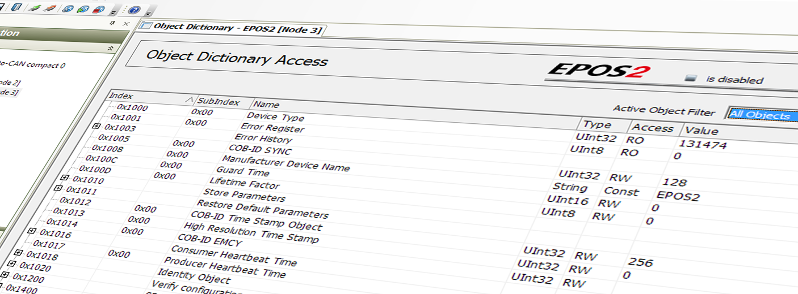
March 2021
CETONI GmbHWiesenring 607554 KorbussenGermanyT +49 (0) 36602 338-0F +49 (0) 36602 338-11www.cetoni.de
25. Summaries and directories
25.1. Table of contents
1. Summaries and directories 3
2.2. Symbols and keywords used 6
3.4. Searching for devices (nodes) 10
3.5. Parameter export / import 15
3.5.1. Open parameter export/import wizard 15
3.5.2. Device Parameter Import 16
3.5.3. Device Parameter Export 17
3.6. Edit Device Parameters 19
3.8. Fixing Double-Module Node ID Conflict 27
4.1. Edit Device Parameters 29
4.2. Export Device Configuration 33
5. Qmix P / Q+ / Q- / TC and V Modules 36
5.1. Edit device parameters - Overview 36
6.1. Configuring a bus terminal 39
6.1.2. Device parameter access 39
6.1.4. Reading register values 42
6.1.5. Writing register values 43
6.2. KL316x - Analog input terminal 0…10 V 46
6.2.1. Configuring Auto Calibration 46
6.3. KL320x – PT100 (RTD) Terminal 49
6.3.1. Configuring Sensor Type 49
6.4. KL331x - Thermocouple Terminal 53
6.4.1. Configuring Thermocouple Type 53
6.5.2. Restore Factory Default Settings 56
6.5.3. Adapt Inhibit Time and Save Parameters 58
7.1. Edit Device Configuration 60
7.1.1. Starting the Configuration Wizard 60
7.1.2. Setting the Gear Factor 62
25.2. Change history
R ev |
Date |
changes |
|---|---|---|
1. 00 |
201 6-02-05 |
Creation of service guide document |
1. 01 |
201 6-04-28 |
Added clearing of initial CAN passive error |
1. 02 |
201 6-05-10 |
Added section for editing device parameters |
1. 03 |
201 6-09-27 |
Added section for editing device configuration with neMESYS UserInterface |
1. 04 |
201 6-10-24 |
Added section about export of QmixElements project, device configuration and log files |
1. 05 |
201 7-01-06 |
Added documentation for QmixIO-B module terminal configuration |
1. 06 |
201 7-07-03 |
Added documentation for neMESYS firmware update |
1. 07 |
201 8-06-26 |
Added documentation for QmixIO-B register access Added documentation for configuration of bus terminal KL316x calibration interval |
1. 08 |
201 8-07-25 |
Added BASE 120 / 600 Firmware Update procedure |
1. 09 |
201 8-08-13 |
Added section for fixing Node ID conflicts of neMESYS Double Modules |
1. 10 |
201 9-02-06 |
Added documentation for QmixIO-B sensor type configuration for K320x PT100 bus terminals |
1. 11 |
201 9-03-27 |
Added section Adding Terminals to Qmix I/O-B Module |
26. Introduction
26.1. Foreword
With this service guide we want to support you as much as possible in handling the device service or failure cases. Please do not hesitate to contact us in case of any questions or suggestions.
26.2. Symbols and keywords used
The following symbols are used in this manual and should assist you in navigating through this document:
Tipp. Describes practical tips and useful information to facilitate the handling of the device. |
|
|---|---|
Important. Describes important information and other especially useful notes, in which no dangerous or damaging situations can arise. |
|
|---|---|
Attention. Identifies a potentially harmful situation. Failure to avert this situation may result in damage to the product or anything in its proximity. |
|
|---|---|
Icon_V orsich t_RGB| |
Caution. Indicates a potentially dangerous situation. Failure to avert this situation may result in light or minor injuries or damages. |
|---|---|
27. neMESYS Service Tool
27.1. Download
For most service procedures in this guide you need special software – the neMESYS Service Tool – EPOS Studio. You can download this service tool from this location:
27.2. Installation
Run the downloaded .exe file to start the installation. Select the custom setup and ensure that the following components are selected (EPOS, EPOS2 and EPOS Studio):
{kind=link}
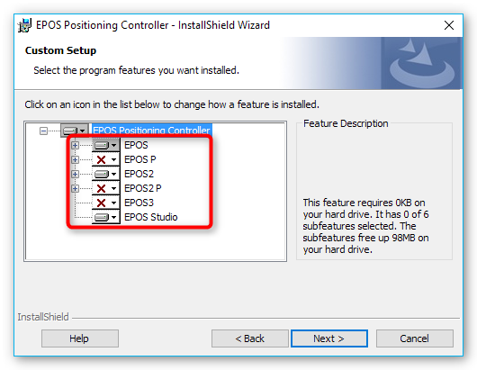
27.3. Start
Before you start the EPOS Studio make sure that your Starter Module / Base Module is properly connected to your PC and switched on. Make sure that no other pump is connected to your Starter Module and that only one neMESYS pump is connected to your Base Module.
Important. Only one single pump should be connected to your PC when using the service tool to avoid communication issues and to prevent accidental modification of device parameters. |
|
|---|---|
Then start the EPOS Studio software. The Startup wizard appears and guides you through the creation of an EPOS Studio project.
First select Create New Project.
{kind=link}
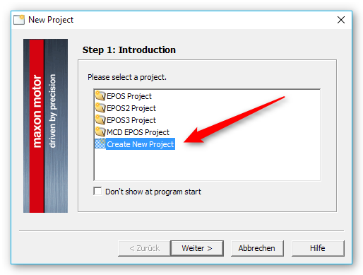
Then enter a project name.
{kind=link}
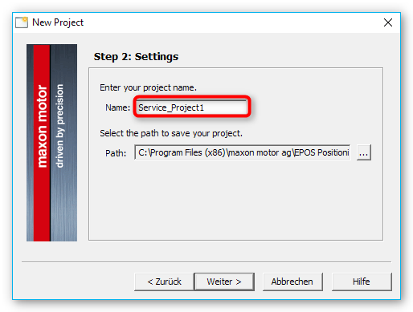
Skip step 3
{kind=link}
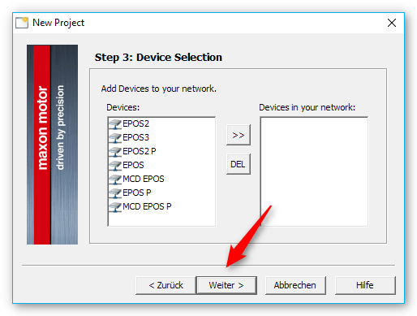
Then select the communication driver CANopen ❶ (or RS232, if you are connected via RS232) and add ❷ it to your drivers in the network on the right side.
{kind=link}
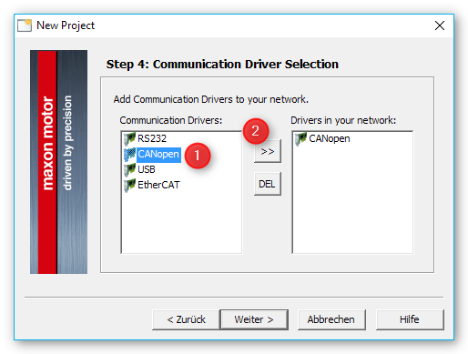
In Step 5 simply click the Finish button.
{kind=link}
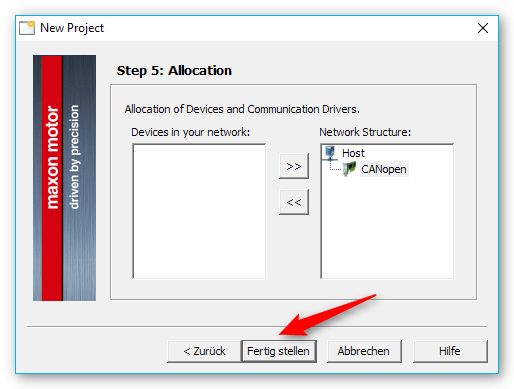
Now you should see the applications screen.
{kind=link}
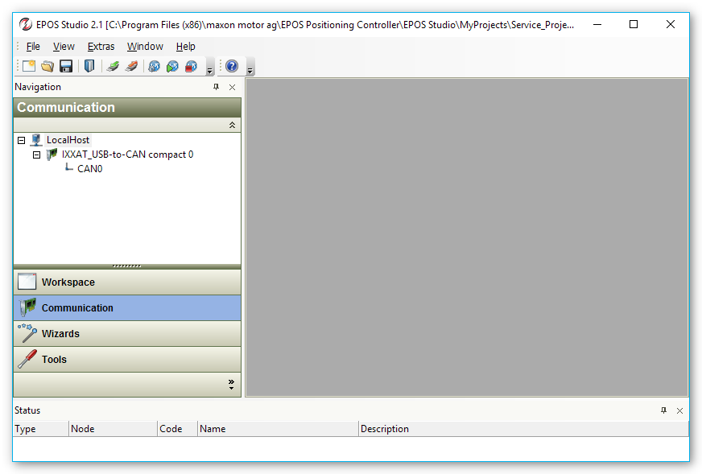
27.4. Searching for devices (nodes)
Right click on the CAN0 communication interface and select Scanning Devices.
{kind=link}
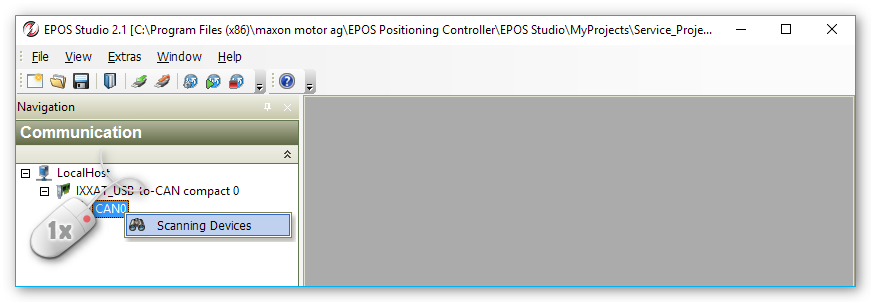
In the following Scanning Devices dialog, click the Settings button.
{kind=link}
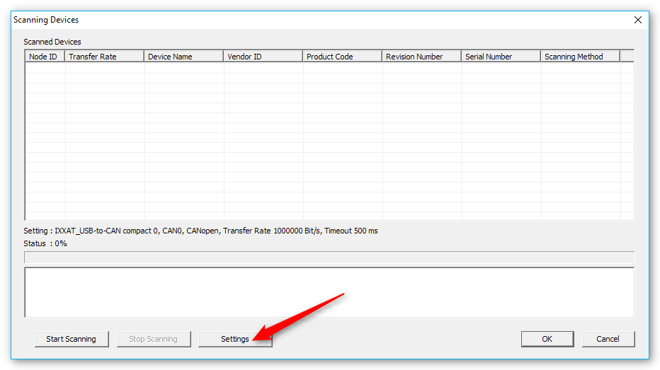
In the Scanning Settings dialog, deselect all Transfer Rates except 1000000 Bit/s ❶. Then deselect LSS Method ❷ and click OK ❸.
{kind=link}
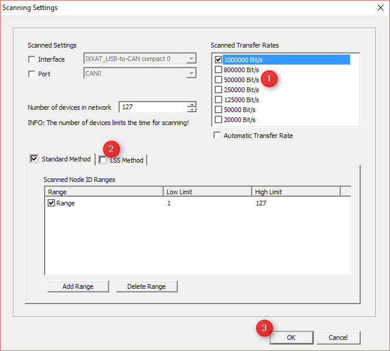
Now click the Start Scanning Button in the Scanning Devices dialog. The software now tries to communicate with all devices starting from ID 1 to ID 127.
{kind=link}
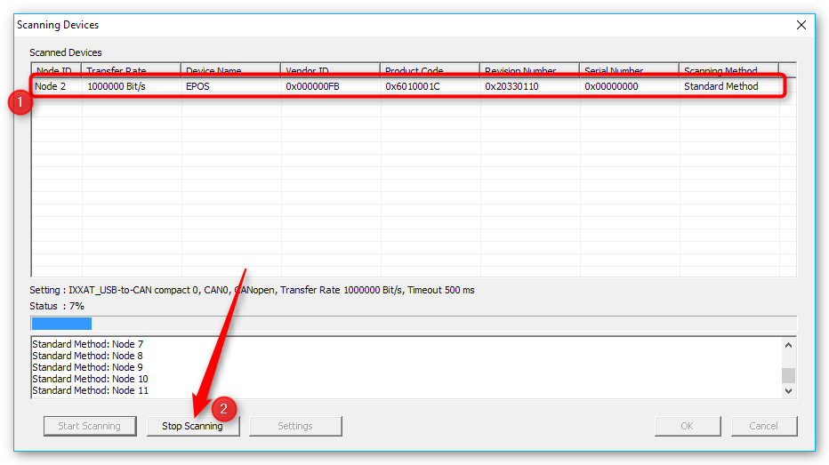
As soon as a node appears in the list of scanned devices ❶, you can stop the scanning by clicking the Stop Scanning button ❷. Then close the Scanning Devices dialog by clicking the OK button in the bottom right. Now you should see the main application window again with the detected node below CAN0 interface:
{kind=link}
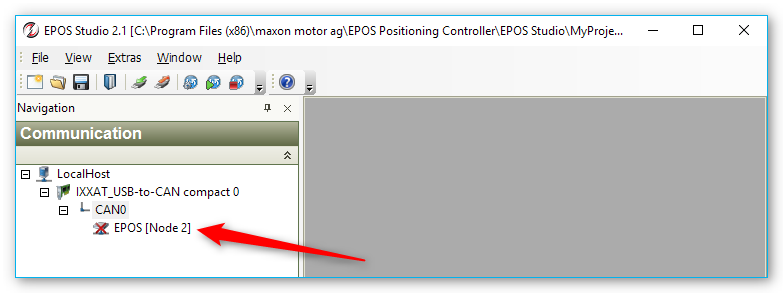
Now click with the right mouse button on the node and then select Connect from the context menu.
{kind=link}
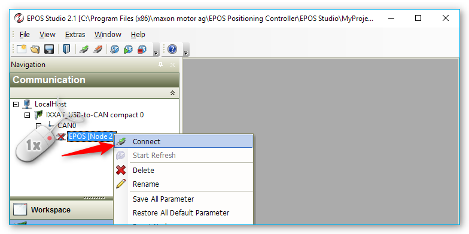
Now the red cross should disappear from the node item and you are connected to the device. It is possible that the device indicates a CAN Passive Mode Error right after connection in the status panel at the bottom (see figure below). This is not a real error but just an indication that no other device was connected to the bus at the time when the device was turned on.
{kind=link}
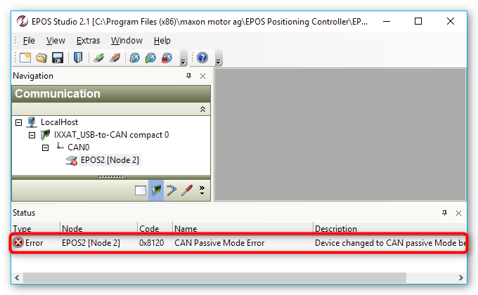
To clear this error, simply click with the right mouse button on the error message, and select the menu item Clear All Entries from the context menu (figure below).
{kind=link}
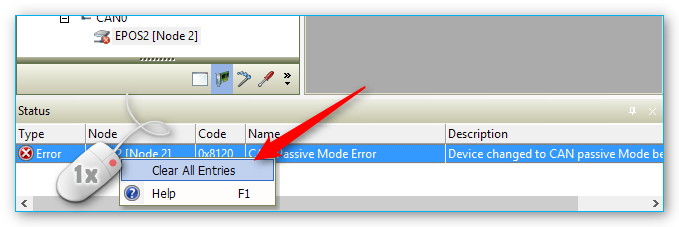
Now your device should be properly connected and you are ready to proceed with further operations. The following picture shows, how your communication panel should look like if everything went well.
{kind=link}
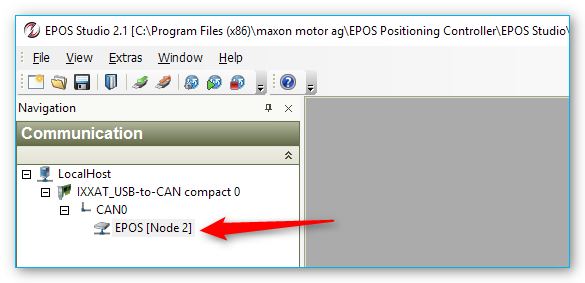
27.5. Parameter export / import
27.5.1. Open parameter export/import wizard
{kind=link}
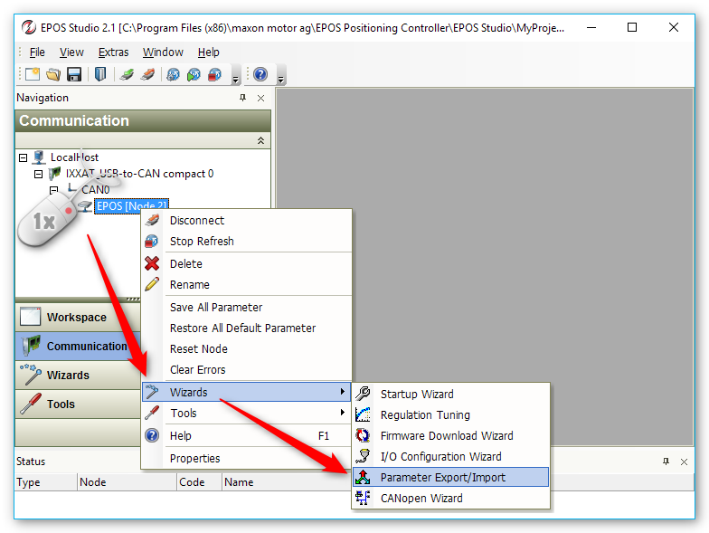
To start the parameter export/import wizard, click with the right mouse button on the node you would like to configure. Then select the Wizards from the context menu and in the Wizards menu select Parameter Export / Import.
27.5.2. Device Parameter Import
Caution. Before you import any parameters into your device, you should export your current device parameters so that you can restore them later in case something goes wrong with the parameter import or in case you imported the wrong parameters. |
|
|---|---|
In the Parameter Export/Import dialog first click the button with the 3 points on the right to select a parameter file.
{kind=link}
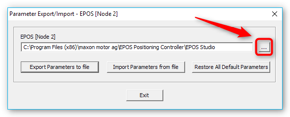
Then click the button Import parameters from file to import the parameters into the device.
{kind=link}
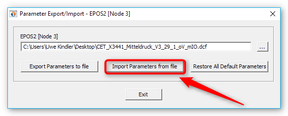
The software now writes the parameters into your device and stores them permanently into internal non-volatile memory.
{kind=link}
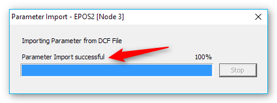
The software should report Parameter Import successful at the end of the parameter import.
Tipp. If you get an error importing the parameters, you should repeat the parameter import – sometimes this fixes the problem. |
|
|---|---|
27.5.3. Device Parameter Export
In the Parameter Export/Import dialog first click the button with the 3 points on the right to select a parameter filename.
In the Parameter File dialog navigate to the target folder, enter the name of the parameter file ❶ and then click the Open button ❷.
{kind=link}
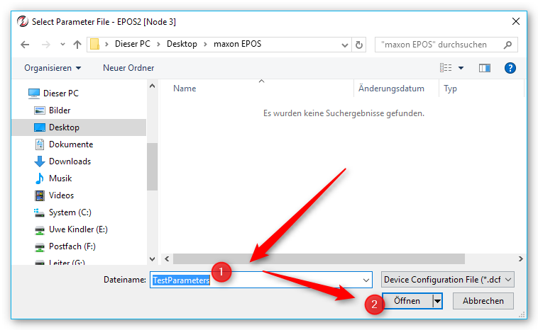
Then click the button Export parameters from file to import the parameters into the device.
{kind=link}
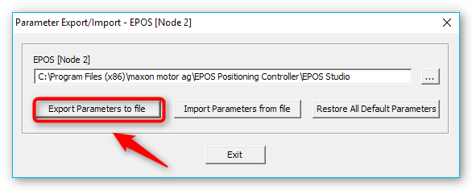
The software now reads the parameters from the device and writes them into a .dcf file (Device Description File).
{kind=link}
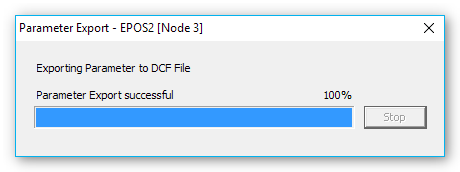
The software should report Parameter Export successful at the end of the parameter import.
27.6. Edit Device Parameters
You can use der service tool to edit device parameters.
Caution. Before you edit any parameters, you should export your current device parameters to restore them later in case something goes wrong. |
|
|---|---|
Caution. Do only change parameters on request of the cetoni service staff. If you change parameters without consulting cetoni service staff, you may lose warranty in case of a device error. |
|
|---|---|
To open the parameter editor, click with the right mouse button on the node you would like to edit. Then select the menu item Tools from the context menu and in the Tools menu select Object Dictionary.
{kind=link}
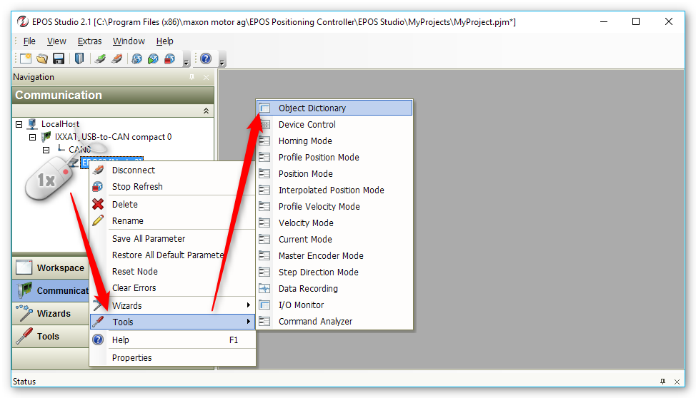
The software now shows the object dictionary for the selected node. In the object dictionary view select All Objects from the Active Object Filter in the top right corner to show all object dictionary entries (see figure below).
{kind=link}
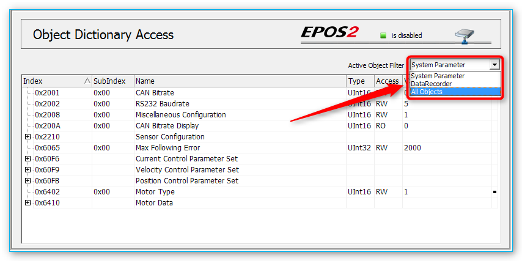
To edit a parameter, simply double click the parameter row:
{kind=link}
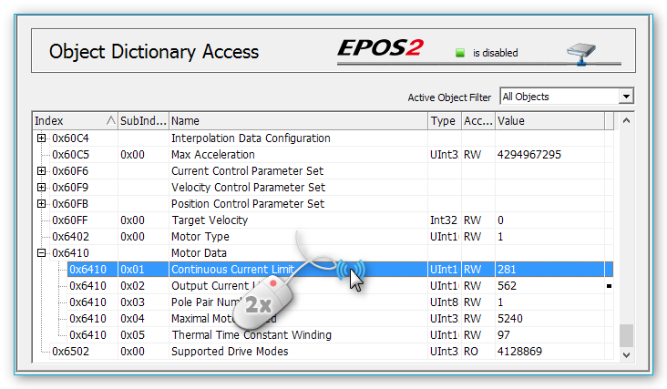
Now you can enter the new value ❶ in the Edit Value Window and click OK ❷.
{kind=link}
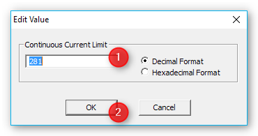
All edited parameters will get lost if the device is turned off or in case of a reset. To save the changed parameters persistent into the device non-volatile memory, click with right mouse button on the node item in the left Communication panel and select Save All Parameter from the context menu.
{kind=link}
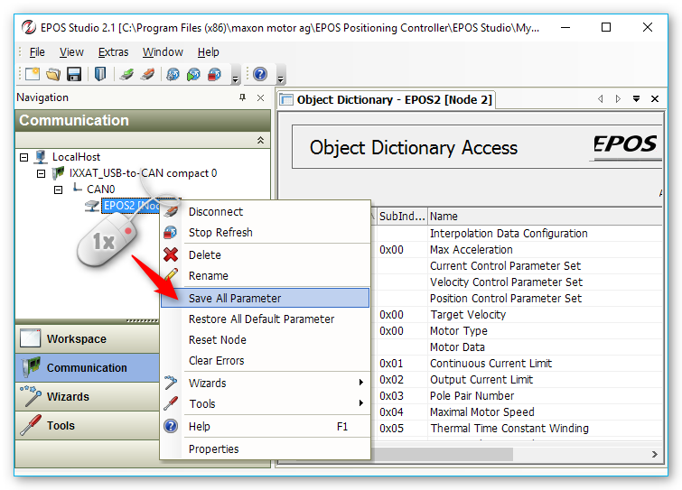
27.7. Firmware Update
To update the firmware, you need to be connected to your device – that means you have successfully completed the steps in section 3.4.
Tipp. To protect other devices from accidental updates, you should only connect the device to your base module, that you would like to update. |
|
|---|---|
To open the Firmware Download Wizard, click with the right mouse button on the node you would like to update. Then select the menu item Wizards from the context menu and in the Wizards menu select Firmware Download Wizard.
{kind=link}
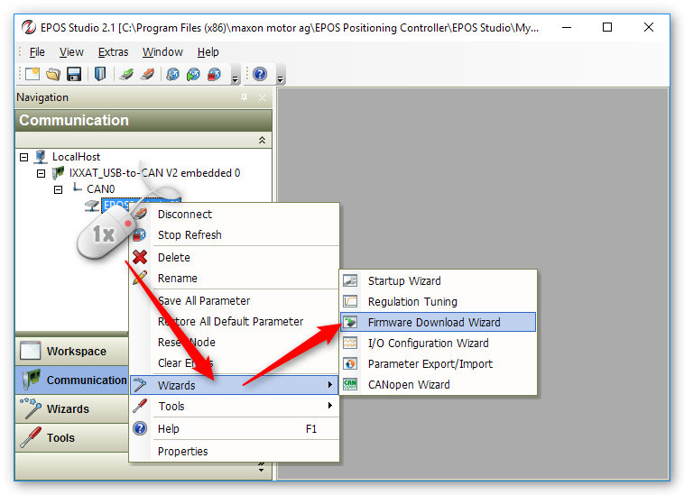
In the window that appears, confirm the warning by clicking the Confirm button and then click the Next > button to continue.
{kind=link}
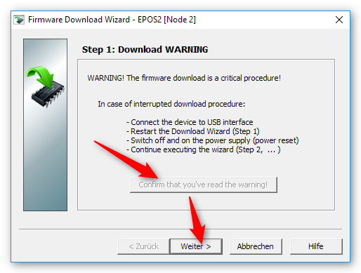
In the next step of the update wizard, you will see on the left ❶ the firmware version, which is currently installed in the device If the version matches the one you want to install, you can now exit the Fimware update.
{kind=link}
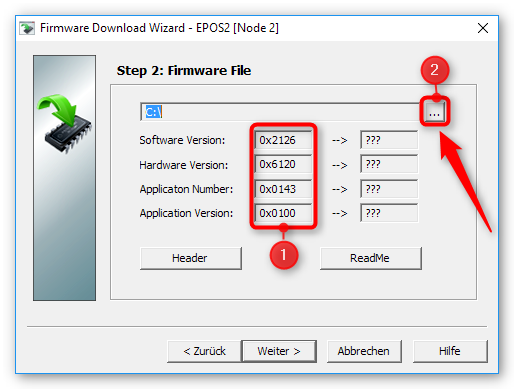
If the correct version is not installed in the device, click on the button with the 3 dots ❷ to display the file dialog for selecting the firmware file. Select the firmware file according to the information provided by the CETONI support staff.
Tipp. Normally the firmware files are located in C:Program Files (x86)maxon motor agEPOS Positioning ControllerEPOS203 Configuration |
|
|---|---|
Now you will see the version of the firmware update file on the right side. Click the Next button to start the firmware update.
{kind=link}
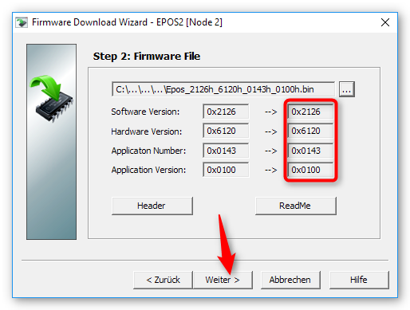
In the next wizard page, click the button with the 3 dots to select a writable folder for temporary storage of the exported device parameters. You can choose the Desktop folder here or any other writable folder. Then click the Export button to export the device configuration file (*.dcf).
{kind=link}
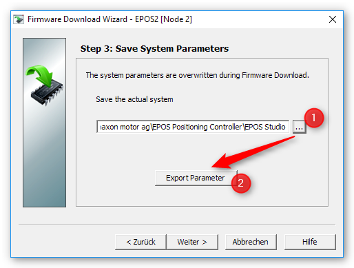
After the parameter export, click the Next button to proceed. On the next Wizard page click the Start button to start the firmware download.
{kind=link}
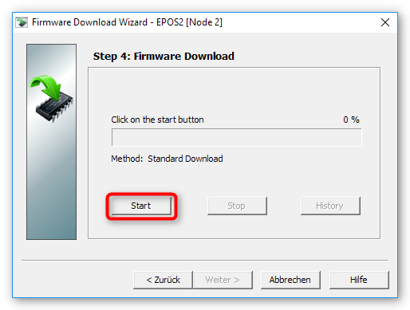
The firmware download starts
Now wait, until the progress bar reaches 100% and proceed by clicking the Next button.
{kind=link}
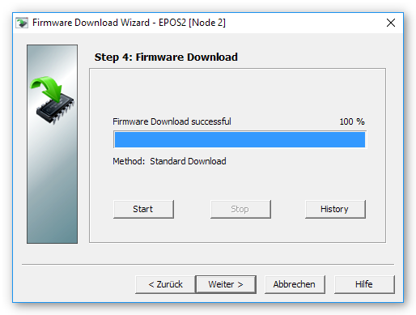
On the next page of the Firmware wizard, you can reimport the previously exported device parameters. The input field should already contain the right parameter file. Click the Import Parameter button to start the parameter import.
{kind=link}
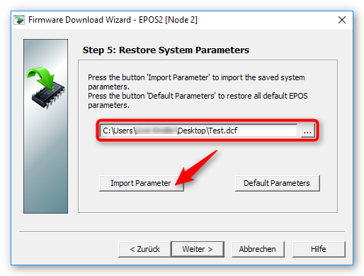
After the parameter import, you can click the Next button to finish the firmware download wizard.
27.8. Fixing Double-Module Node ID Conflict
If you have one Double Module connected to one Base Module, a device scan with the EPOS Studio Software should show you two different node identifiers – one for each pump channel of the double module. If only one node has been detected, then there is likely a node conflict - i.e. the two channels have the same node ID.
To fix the node conflict, do the following steps. Connect only the Double Module to your base module – remove any other modules. Then set the service switch into OFF position (see picture above). Now scan for devices in EPOS Studio.
{kind=link}
{kind=link}
The scan in EPOS studio should detect one Node:
{kind=link}
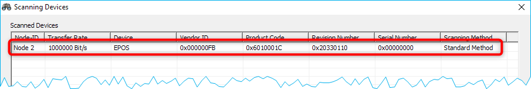
If the software does not detect any node, then there is a hardware defect and you should contact the CETONI support for further instructions.
If the software has detected one node, then you can stop the scanning process and then click with the right mouse button on the node row in the table of scanned devices and select the menu item Change Node-ID from the context menu.
{kind=link}
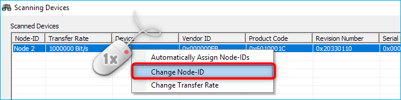
Set the node ID to 114. Then rescan to verify that the software finds the node 114. The node 114 is now your left channel. Now set the service switch back into the ON position. Scan for devices in EPOS Studio. The software should find two nodes - the node 114 and a second node.
{kind=link}
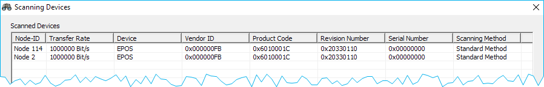
Now change the Node ID of the channel with the Node ID <> 144 to node ID 113 and then set the node ID from Node 114 to 112 and rescan to verify that the two nodes are detected. The software should detect the two nodes 112 and 113.
{kind=link}
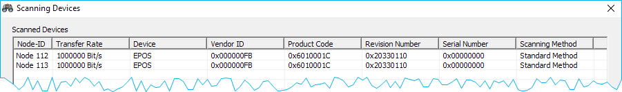
Now you can reconfigure your device in QmixElements software.
If you use a Starter Module instead of a BASE-Module then you might need to change the Node ID of the Starter Module to ID 115 before you connect the Double Module to avoid node ID conflicts with the Starter Module.
28. QmixElements Software
28.1. Lowering Log-Interval of CSV and Graphical Logger
The minimum value of the log interval in QmixElements is limited to 0.1 seconds. Because Windows is not a realtime operating system, there is always jitter when doing things in certain intervals. That means, when the log interval is set to 0.1 seconds it may be up to 0.11 or down to 0.09 seconds. So there is a jitter of ca. ± 10 ms. The lower the log interval, the higher is the impact of this jitter on the precision of the recorded values. That means for a log interval of 0.1 seconds the jitter of ±- 10 ms will cause a deviation of 10%. For a log interval of 0.01 seconds the jitter may cause a deviation of 100% - that means the interval of the recorded values reaches from 0.005 to 0.02 seconds. Therefore we decided to limit the log interval to a reasonable value of 0.1 seconds.

To lower the minimum log interval of the CSV and graphical logger, you need to edit the current active device configuration. To do this, select Device Browse Configuration Folder from the application main menu.
Attention. It is not recommended to lower the interval below 0.01 seconds because the timestamps of the recorded values will not match the real timestamps and because the precision of the recorded timestamps is too low. |
|
|---|---|
{kind=link}
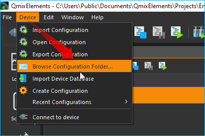
This will open the device configuration folder in the Windows file explorer. Then open the file datalogger.xml in a text editor or XML editor.

Now change the SampleTimeSecs Min value to the required minimum logging interval. Now restart the QmixElements software and open the logger configuration – now you can lower the logging interval to the value entered in the datalogger.xml file.
Attention. Logging intervals below 0.01 seconds may cause high CPU load and may have a negative impact on other QmixElements functions. |
|
|---|---|
28.2. Edit Device Parameters
You can edit device parameters directly in the QmixElements software using the CANopen Tools Plugin. To open the CANopen Tools Plugin, create a new project by selecting File New Project from the main menu.

Give the project a meaningful name and click OK.

If the new project has been created and activated, select Device Open Configuration from the main menu.

Now select the configuration canopentools (shared) from the list of available configurations and click OK.
{kind=link}
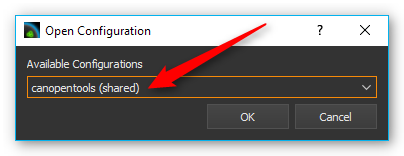
The application will now restart with the activated CANopen tools plugin. You will find detailed instructions about the CANopen Tools plugin in the QmixElements software manual.
Attention. Changing device parameters can cause malfunctions or cancel safety mechanisms. Only change device parameters as instructed by the technical support staff. |
|
|---|---|
28.3. Export Device Configuration
If you need to export the device configuration so send it to CETONI support, please select the menu item Device Export Configuration from the application main menu.

28.4. Export Project
Currently QmixElements does not support the automatic export of complete projects. If you need to send a complete project including all settings to the CETONI support, you need to execute the following steps.
Select the menu item File Browse Project Folder to open the project folder of the current project in file explorer.

The file explorer will open the project folder and show you the project files. Navigate to the parent directory of the project folder by clicking the parent directory name (figure below)
{kind=link}
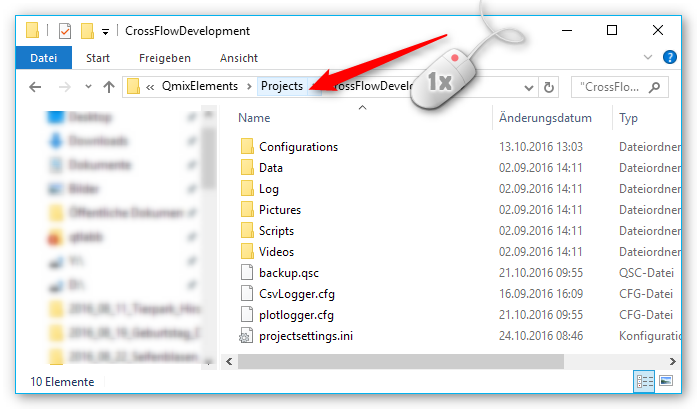
If you are in the parent folder, you can see the project folder of you current project:

Press and hold (or right-click) the project folder, select (or point to) Send to, and then select Compressed (zipped) folder. A new zipped folder with the same name is created in the same location that you can send to CETONI support.
28.5. Send Log-Files
The QmixElements log files are located in c:UsersPublicDocumentsQmixElementsLog. The main application log file is QmixElements.log.

In case the CETONI support requests the log files, you can send the QmixEleemnts.log file or you can send the compressed Log folder. To send the compressed Log folder, navigate to the c:UsersPublicDocumentsQmixElements directory. Press and hold (or right-click) the Log folder, select (or point to) Send to, and then select Compressed (zipped) folder. A new zipped folder with the same name is created in the same location that you can send to CETONI support.
29. Qmix P / Q+ / Q- / TC and V Modules
29.1. Edit device parameters - Overview
To edit the device paramaters of the above mentioned Qmix devices you can use the QmixElements CANopenTools Plugin. To open the CANopenTools Plugin, start the QmixElements software and select from the main menu the menu item Device -> Open Configuration.
{kind=link}
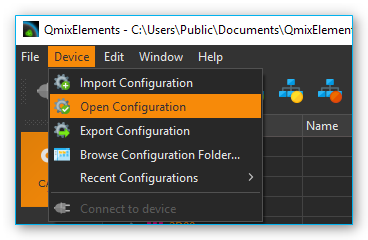
Then select the canopentools (shared) configuration:
{kind=link}
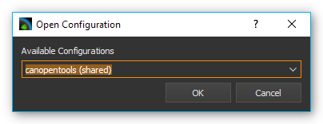
Connect your Qmix module to you BASE module and turn it on. Then click the connect ❶ button in the QmixElements software and scan for connected devices ❷.
{kind=link}
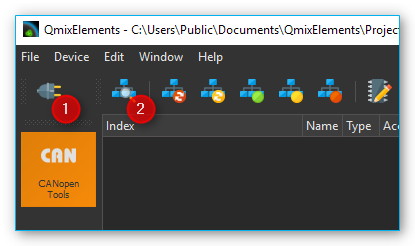
The software should detect the connected module ❶. Click with the right mouse button on the entry with the detected device and select Assign EDS File ❷ (see figure below).
{kind=link}
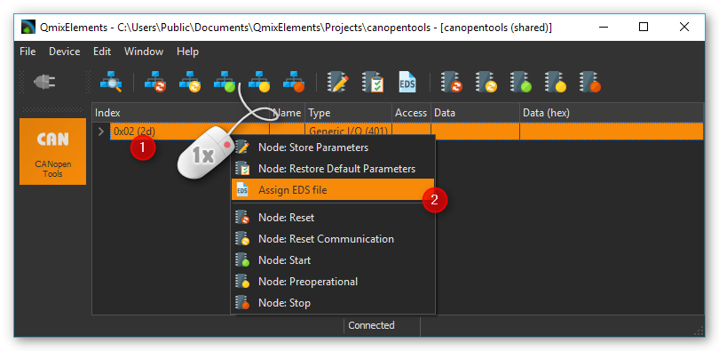
Select the valid EDS file ChipF40.eds for the Qmix module from the existing EDS-files.
{kind=link}
You can now access all device and configuration parameters of the device:
{kind=link}
Attention. Changing device parameters can cause malfunctions or cancel safety mechanisms. Only change device parameters as instructed by the technical support staff. |
|
|---|---|
30. Qmix I/O-B Module
30.1. Configuring a bus terminal
30.1.1. Overview
The QmixIO-B module is equipped with a series of bus terminals with different functions, depending on the configuration. Each individual bus terminal contains a set of registers for configuration or for reading status information. These registers are numbered starting at 0 and can therefore be easily addressed via the index. The following picture shows the register overview of the KL3162 analog input terminal.
{kind=link}
To obtain an overview and description of all registers for a specific terminal, simply download the documentation for the terminal from Beckhoff.
30.1.2. Device parameter access
To access and configure a certain bus terminal you can use the QmixElements CANopenTools Plugin. To open the CANopenTools Plugin, start the QmixElements software and select from the main menu the menu item Device Open Configuration.
Then select the canopentools configuration:
Connect your QmixIO-B module or your Beckhoff bus coupler with your PC and turn it on. Then click the connect ❶ button in the QmixElements software and scan for connected devices ❷.
The software should detect the connected module ❶. Click with the right mouse button on the entry with the detected device and select Assign EDS File ❷ (see figure below).
Select the valid EDS file for the Beckhoff BK5151 bus coupler from the existing EDS-files.
{kind=link}
Now navigate to the object dictionary entry 0x4501– Register Communication Bus Terminal. Select the sub entry (0x4501subx) that matches the channel of your bus terminal that you want to configure. The bus terminals are numbered in the order they are attached to the bus coupler. I.e. if you have two terminals and the first terminal is an analog input terminal and the second terminal is a thermocouple terminal, then the object dictionary entry would be 0x4501sub2 – Register Communication Bus Terminal 2 for the configuration of the thermocouple bus terminal.
{kind=link}
30.1.3. Register access
Register values are read and written via the corresponding object dictionary entry for the terminal 0x4501subX where X is the index of the terminal. The register is accessed by reading and writing a 32-bit value. The following table shows the bits of this 32–bit value
31 |
30 |
2 4 |
23 |
16 |
15 |
9 |
7 |
0 |
|---|---|---|---|---|---|---|---|---|
Ac ce ss b it |
Channel number |
Register number |
High byte reg ister value |
Low byte reg ister value |
||||
M SB |
LSB |
Access bit: 0 = read access, 1 = write access
Channel number: If a bus terminal has multiple channels, like the Kl3162 bus terminal with 2 analog input channels, this channel number addresses the corresponding channel of the terminal. Channel number 0 corresponds here to the first channel, 1 to the second channel, and so forth.
Register number: The register that should be accessed. Read the bus terminal documentation for a register overview.
Register value: The 16-bit register value consists of high and low byte
30.1.4. Reading register values
To read a register value, you first need to write to object 0x4501subX to identify the channel and the register and then you can read the register value from the same object. So each read consists of a write access followed by a read access from the same object.
The following example shows how to read a parameter. For this example, we assume that we want to read the calibration interval (register 40) from the second channel of the KL3162 analog input terminal. This terminal is the 1st terminal on our QmixIO-B module so we need to access the object dictionary entry 0x4501sub1.
To read the calibration offset value, we first need to write the following value:
Access bit 0 = read access
Channel number 1 (0 = first channel, 1 = second channel …)
Register index 40 (Calibration interval) hexadecimal 28
Register value 0
So we have the following value that we need to write: 0x01280000
{kind=link}
To see the value that has been read from device, you need to click on another object ❶, e.g. 4501sub0 and then click on the index 0x4501sub1 again ❷. This will trigger a read of the object 4501sub1.
{kind=link}
Now you can see the value read from the device. It is 0x01280708. So the value read from the device contains the same configuration for Access bit, channel number and register index, but the register value field has been updated with the value read from device. The hexadecimal value of 708 corresponds to 1800 decimal. The calibration value is given in multiple of 100 ms so the 1800 indicates a calibration interval of 180 seconds.
30.1.5. Writing register values
Before you can change any register value of a terminal channel, you need to disable the write protection for the channel. In normal mode all user registers are read-only with the exception of Register 31. In order to deactivate this write protection you must write the code word (0x1235) into Register 31. If a value other than 0x1235 is written into Register 31, write protection is reactivated. Please note that changes to a register only become effective after restarting the terminal (power off/power-on). So to deactivate write protection, the value 0x1y1F1235 (y = Channel number) needs to be written first.
For the following example we want to change the calibration interval of the first channel of a KL3162 dual channel analog output terminal to 300 seconds. The first step we need to do is to disable write protection for the first channel. This terminal is the 1st terminal on our QmixIO-B module so we need to access the object dictionary entry 0x4501sub1.
Removing Write Protection
First we disable write protection by writing the codeword 1235 to the register 31:
Access bit 1 = write access
Channel number 0 (0 = first channel, 1 = second channel …)
Register index 31 (Code word register) hexadecimal 1F
Register value 1235
So we write the following value to disable write protection: 0x801F1235
{kind=link}
Writing new Value
Now we can change the calibration time:
Access bit 1 = write access
Channel number 0 (0 = first channel, 1 = second channel …)
Register index 40 (Calibration interval) hexadecimal 28
Register value 300 seconds, the value is given in multiple of 100 ms, that means value is 3000 decimal hexadecimal 0BB8
So we write the following value to change the calibration interval to 300 seconds: 0x80280BB8
Reading back written value
Now we can verify the written value by reading the register value back.
Access bit 0 = read access
Channel number 0 (0 = first channel, 1 = second channel …)
Register index 40 (Calibration gain) hexadecimal 28
Register value 300 seconds, the value is given in multiple of 100 ms, that means value is 3000 decimal hexadecimal 0000
So we write the following value to read the calibration interval: 0x00280000
Now click on another object dictionary entry and then on this entry again, to force an update of the value read from device, like it is written in the section Reading register values.
Storing data persistently
If you have configured all channels properly, you can write the configuration persistently into the non-volatile memory of the Beckhoff device. Click with the right mouse button into the device entry ❶ and select Node Store Parameters from the context menu ❷.
{kind=link}
30.2. KL316x - Analog input terminal 0…10 V
30.2.1. Configuring Auto Calibration
To configure the KL316x terminal you can use the QmixElements CANopenTools Plugin. Please read the section Configuring a bus terminal to learn how to read and write registers of a bus terminal.
Sometimes the Auto Calibration of the KL316x analog input terminal may fail or cause problems. You can prevent this by disabling auto calibration and setting the interval for forced calibration to a very long time. The following picture shows relevant registers of the bus terminal (copied from manual).
{kind=link}
Before you can change any value, you need to disable write protection for the channel of the terminal. Read the section Removing Write Protection to learn how to disable the write protection for the registers of a single channel.
If write protection is removed, we can start writing other registers. First you can set the calibration interval (R40) to the maximum value 0xFFFF decimal 65536. The value is given in multiple of 100 ms so this means calibration interval of 6553 seconds:
Access bit 1 = write access
Channel number y (0 = first channel, 1 = second channel …)
Register index 40 (Calibration interval) hexadecimal 28
Register value maximum hexadecimal FFFF
Write value 0x8y28FFFF to object 0x4501subX and replace y with the channel number. You can now read the value back, to verify if it has been written properly by writing 0x0y280000.
Now we also set the interval for forced calibration (R44) to a maximum value 0xFFFF:
Access bit 1 = write access
Channel number y (0 = first channel, 1 = second channel …)
Register index 44 (Interval for forced calibration) hexadecimal 2C
Register value maximum hexadecimal FFFF
Write value 0x8y2CFFFF to object 0x4501subX and replace y with the channel number.
{kind=link}
You can now read the value back, to verify if it has been written properly by writing 0x0y2C0000.
Then you can disable auto calibration via the feature register R32.
{kind=link}
This register contains several configuration bits. Read the KL316x manual for a detailed description of the bits in the feature register.
{kind=link}
So we need to set Bit 5 of this register to 1 to disable. To ensure that no other bits are modified, you first need to read the register value from the device:
Access bit 0 = read access
Channel number y (0 = first channel, 1 = second channel …)
Register index 32 (Calibration gain) hexadecimal 20
Register value 0000
So we write the following value to read the feature register: 0x00200000
Normally the device should return the default configuration value: 0. Now you can set bit 5 – that means the value to write will be the value read from device ored with 0x0020 (Bit 5 set).
Access bit 1 = read access
Channel number y (0 = first channel, 1 = second channel …)
Register index 32 (Calibration gain) hexadecimal 20
Register value 0020
Write value 0x8y200020 to object 0x4501subX and replace y with the channel number. You can now read the value back, to verify if it has been written properly by writing 0x0y200000.
If you have configured all channels properly, you can write the configuration persistently into the non-volatile memory of the Beckhoff device like written in section Storing data persistently.
30.3. KL320x – PT100 (RTD) Terminal
30.3.1. Configuring Sensor Type
To configure the thermocouple type of a KL320x terminal you can use the QmixElements CANopenTools Plugin. Please read the section Configuring a bus terminal to learn how to read and write registers of a bus terminal.
You can select the sensor type via the feature register (32) of the KL320x bus terminal. Here is a snippet from the KL320x manual that shows the register R32. You can select the type via bits 12-15.
|
Description of the operating mode |
||
|---|---|---|---|
Bit 0 |
1 |
User scaling (R33, R44) active [0] |
|
Bit 1 |
1 |
Manufacturer scaling (R19, R20) active [1] |
|
Bit 2 |
1 |
Watchdog timer active [1] |
|
In the delivery state, the watchdog timer is switched on. |
|||
Bit 3 |
1 |
Sign / amount representation [0] |
|
Sign / amount representation is active instead of two’s- |
|||
complement representation |
|||
(-1 = 0x8001). |
|||
Bit 4 |
1 |
Siemens output format [0] |
|
This bit is used for inserting status information on the lowest 3 |
|||
bits (see below). |
|||
Bit 5,6 |
reserved, do not change |
||
Bit 7 |
1 |
Activates filter constant in R37 [0] |
|
Bit 8 |
1 |
Over range Protection [1] |
|
If the temperature exceeds 850°C the status bits are |
|||
correspondingly set and the output value is restricted to |
|||
850°C. |
|||
Bit 9 |
reserved, do not change |
||
Bit 10 |
1 |
Two-wire connection [0] |
|
Bit 11 |
reserved, do not change |
||
Bit |
E lement |
Valid measuring range |
|
,13,12 |
|||
0 0 0 0 |
P T100 |
-200°C to 850°C |
|
0 0 0 1 |
N I100 |
-60°C to 250°C |
|
0 0 1 0 |
PT 1000 |
-200°C to 850°C |
|
0 0 1 1 |
P T500 |
-200°C to 850°C |
|
0 1 0 0 |
P T200 |
-200° C to 850°C |
|
0 1 0 1 |
NI 1000 |
-200°C to 850°C |
|
0 1 1 0 |
N I120 |
-80°C to 320°C |
|
1 1 1 0 |
** Output in Ω** |
10.0 Ω to 5000.0 Ω |
|
1 1 1 1 |
** Output in Ω** |
10.0 Ω to 1200.0 Ω |
When writing data to the terminal or reading data to the terminal, the register value of the feature register is mapped into the lower 16 bits of the 32 bit message value:
31 |
30 |
2 4 |
23 |
16 |
15 |
12 |
0 |
|
|---|---|---|---|---|---|---|---|---|
Ac ce ss b it |
Channel number |
0x20 (decimal 32) |
F ea tu re re gi st er v al ue |
|||||
Se ns or T yp e* |
Other Feature bits |
|||||||
M SB |
LSB |
Now navigate to the object dictionary entry 0x4501– Register Communication Bus Terminal. Select the sub entry (0x4501subX) that matches the channel of your thermocouple terminal. I.e. if you have two terminals and the first terminal is an analog input terminal and the second terminal is your thermocouple terminal, then the object dictionary entry would be 0x4501sub2 – Register Communication Bus Terminal 2.
Before you can change any register value of a terminal channel, you need to disable the write protection for the channel. Read section Removing Write Protection to learn how to disable the write protection.
To disable write protection for a channel, write 0x8y1F1235 to the channel. Replace the y with the channel number. If you would like to change the first channel (channel 0) then write 0x801F1235 to the terminal register.
Now you can write the RTD sensor type to the terminal. Use the values from the feature register table above. Replace y with the channel number. Please note, that writing the feature register may change other bits in the feature register:
PT100 – 0x8y200106
PT1000 – 0x8y202106
To configure the PT100 sensor for channel 0 write 0x80200106 to the terminal.
{kind=link}
Now you can verify that the thermocouple has been configured properly, by reading back the configured register value. To do this, first write 0x0y200000 to the terminal. (e.g. 0x00200000 for channel 0).
{kind=link}
Then click on sub index 0 and then on the sub index of the terminal, to update the value.
{kind=link}
If you have configured all channels properly, you can write the configuration persistently into the non-volatile memory of the Beckhoff device like written in section Storing data persistently.
30.4. KL331x - Thermocouple Terminal
30.4.1. Configuring Thermocouple Type
To configure the thermocouple type of a KL331x terminal you can use the QmixElements CANopenTools Plugin. Please read the section Configuring a bus terminal to learn how to read and write registers of a bus terminal.
You can select the thermoelement type via the feature register (32) of the KL331x bus terminal. Here is a snippet from the KL331x manual that shows the register R32. You can select the type via bits 12-15.
{kind=link}
When writing data to the terminal or reading data to the terminal, the register value of the feature register is mapped into the lower 16 bits of the 32 bit message value:
31 |
30 |
2 4 |
23 |
16 |
15 |
12 |
0 |
|
|---|---|---|---|---|---|---|---|---|
Ac ce ss b it |
Channel number |
0x20 (decimal 32) |
F ea tu re re gi st er v al ue |
|||||
Se ns or T yp e* |
Other Feature bits |
|||||||
M SB |
LSB |
Now navigate to the object dictionary entry 0x4501– Register Communication Bus Terminal. Select the sub entry (0x4501subX) that matches the channel of your thermocouple terminal. I.e. if you have two terminals and the first terminal is an analog input terminal and the second terminal is your thermocouple terminal, then the object dictionary entry would be 0x4501sub2 – Register Communication Bus Terminal 2.
Before you can change any register value of a terminal channel, you need to disable the write protection for the channel. Read section Removing Write Protection to learn how to disable the write protection.
To disable write protection for a channel, write 0x8y1F1235 to the channel. Replace the y with the channel number. If you would like to change the first channel (channel 0) then write 0x801F1235 to the terminal register.
Now you can write the thermocouple type to the terminal. Use the following values for the different types:
Typ K – 0x8y201026
Typ J – 0x8y202026
To configure the Typ K thermocouple for channel 0 then write 0x80201026 to the terminal.
{kind=link}
Now you can verify that the thermocouple has been configured properly, by reading back the configured register value. To do this, first write 0x0y200000 to the terminal. (e.g. 0x00200000 for channel 0).
Then click on sub index 0 and then on the sub index of the terminal, to update the value.
{kind=link}
If you have configured all channels properly, you can write the configuration persistently into the non-volatile memory of the Beckhoff device like written in section Storing data persistently.
30.5. Adding Terminals
Before you start, please contact the application and sales team of CETONI and tell them which device you are going to update (CET-number) and which terminals you are going to add to your Qmix-I/O-B. CETONI will send you an updated device database which you have to import into your QmixElements software or, if necessary, an updated software version if the terminals are not supported by QmixElements at the moment. After you have imported the updated device database or reinstalled the software, please perform the following instructions.
30.5.1. Preparations
Please add your Qmix-I/O-B module only to your Qmix system and check that your device is switched off. Physically add your new terminals to your Qmix-I/O-B. Terminate the Qmix-I/O-B with the Beckhoff KL 9010 end terminal. Finally switch on your device.
Attention. Do not forget to terminate your Qmix-I/O-B using the KL 9010 bus end terminal. Otherwise the device will not work.. |
|
|---|---|
30.5.2. Restore Factory Default Settings
Factory default settings need to be restored in order to let the device properly set up it’s communication parameters. Therefore in QmixElements load the device configuration canopentools. Connect the software to your Qmix system and scan for devices connected to your base module. A generic I/O device should be displayed (please see figure below).
{kind=link}
Next please look for the object dictionary entry 1011 Restore default parameters. In sub-index 4 Restore Manufacturer Defined Default Parameters please enter the value 0x64616F6C in Data (hex). Subsequently please reset the device pressing the All nodes: Reset button (please see figures below).
{kind=link}
{kind=link}
30.5.3. Adapt Inhibit Time and Save Parameters
As second last step you need to set the inhibit time of all Transmit PDO Communication Parameter entries for analog input devices. Starting from object dictionary entry 1801 till 1803, please click the sub-index 1 COB-ID and check whether the first digit in Data (hex) is 8. If it is not, in sub-index 3 Inhibit Time please enter the value 1000 in the Data field. If you have found a COB-ID carrying 8 as the first digit in Data (hex), the communication parameter is deactivated. That means you have successfully finished this step (please see figure below).
Important. Object dictionary entry 1800 is reserved for digital input channels. Please leave it’s configuration untouched. |
|
|---|---|
{kind=link}
Finally you’ll just have to save the configured parameters by pressing the Node: Store Parameters button and accept the following question for storing the parameters permanently to the device.(please see the figure below).
{kind=link}
You have finished adding the new terminals and should now be able to create a new device configuration with your updated Qmix-I/O-B device and use it within your application.
31. neMESYS UserInterface
31.1. Edit Device Configuration
31.1.1. Starting the Configuration Wizard
Start the neMESYS UserInterface and scan for devices with your pump attached. Select the pump you would like to configure by clicking on the label on top of the pump. The label of the selected pump will be highlighted green.
{kind=link}
Now enter the service mode by clicking the menu item Setup Enter Service Mode
{kind=link}
Enter the service password epos241 into the password field that appears.
{kind=link}
The title bar now indicates that you are working in service mode.
{kind=link}
Now select the menu item Setup Configure Axis from the main menu
{kind=link}
The neMESYS Configuration Wizard appears.
{kind=link}
Now click the Next button until you see the desired configuration page.
31.1.2. Setting the Gear Factor
Start the configuration wizard like written in the section above and navigate to the wizard page Step 2 – Configuring Pump. On this page, you can see the gear factor on the left:
{kind=link}
Ensure that the gear factor matches the physical device configuration and modify it accordingly. Finally click Save configuration into device to store the changes in non-volatile device memory. Then close the configuration wizard and execute a device scan to apply your changes.
{kind=link}
32. BASE 120 / BASE 600 Firmware Update
32.1. Preparation
Connect your BASE module to your PC. Start the software Vci3floadGui or Vci4floadGui via Windows Explorer. You will find the software in C:Program FilesIXXAT3.5 or C:Program FilesHMSIXXAT VCI 4.0 after the installation of the QmixElements or neMESYS User Interface software (see figure below).
{kind=link}
The software will show you the detected USB-to-CAN interface. IF the software does not detect any USB-to-CAN interface then please try to connect your BASE module to another USB interface of your PC.
You only need to do an update, if you have a V2 device, that means, if you have an USB-to-CAN V2 embedded or an USB-to-CAN V2 compact. If you do not have a V2 device, then you are finished now.
32.2. Update procedure
An USB-to-CAN V2 device should appear in the Device field ❶ of the Flashloader window.
{kind=link}
Click the >> button ❷ to select the firmware (eg USB-to-CAN_V2_FW_0_1_6_3_R380.hex). You will find the latest firmware here:
http://www.cetoni.de/english/en-service/downloads/software.html
Attention. Do not interrupt the process while the flash procedure is running! |
|
|---|---|
Now click the Flash button to start the update process ❹. Wait for the process to complete and then click Verify. If the verification succeeds with an OK message (see Figure below) the update process is complete and your device has been updated successfully.
{kind=link}